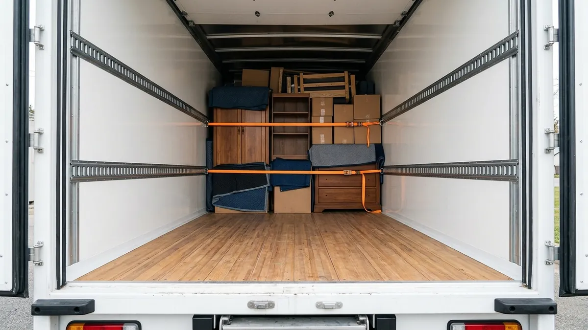

Ratgeber
Ratgeber: Lieferwagen mieten und selber zügeln
Praktisches Wissen für Ihren Transport – vom Führerausweis über die Ladungssicherung bis zur Rückgabe des Mietwagens.
Mietlieferwagen: Übergabe und Rückgabe richtig machen
Worauf Sie bei der Abholung und Rückgabe eines Mietlieferwagens achten sollten: Schäden dokumentieren, Tank und Kilometer, Reinigung, Unfall und Panne unterwegs.
Selber zügeln oder Umzugsfirma? Der ehrliche Vergleich
Mietlieferwagen oder Zügelfirma: Wann sich der Umzug in Eigenregie lohnt, wann Profis die bessere Wahl sind – und wie Sie beides kombinieren können.
Parkplatz für den Umzug sperren in Winterthur: So geht’s
Parkfelder für den Umzugswagen in Winterthur sperren lassen: Gesuch bei der Stadtpolizei, Fristen, Kosten und was gilt, wenn Sie nur kurz zum Ein- und Ausladen halten.

Ladung im Lieferwagen richtig sichern So sichern Sie Möbel und Kartons im Lieferwagen: Was das Gesetz verlangt, welche Kräfte beim Bremsen wirken und wie Sie Spanngurte richtig einsetzen. Selber zügeln mit dem Mietlieferwagen: die Checkliste Selber zügeln Schritt für Schritt: was Sie vier Wochen, eine Woche und am Zügeltag erledigen – vom Lieferwagen über Helfer bis zur Anmeldung in Winterthur. Lieferwagen fahren mit dem Führerausweis B: Was bis 3,5 Tonnen gilt Welchen Lieferwagen dürfen Sie mit dem Führerausweis B fahren? Gesamtgewicht, Nutzlast, Anhänger und Tipps für die erste Fahrt mit einem Sprinter.